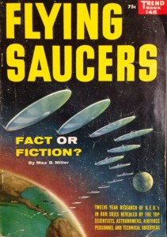

Alien and UFO literature was a major collection topic for Mr. Gleason. Most of the books date to the 1950s and 60s, somewhat of a heyday for UFOlogists, but there are some earlier and later volumes as well. Some of the books compile stories of UFO and alien sightings from around the world, while others present arguments in favor of the existence of aliens. A few focus on singular extraterrestrial events. A couple entertaining volumes seek to explain the Tunguska Incident as the result of alien intervention or accident.
Harold T. Wilkins
New York: Citadel Press, 1954 [First edition.]
Summary: Wilkins, a prominent believer in extraterrestrials, discusses his belief in aliens, making several predictions about the future of space travel and what mankind might find there. Wilkins wrote several books about many supernatural topics, including Atlantis.
Flying Saucers from Another World
Jimmy Guieu
London: Hutchinson, 1956 [First edition.]
Summary: The author offers historical examples of flying saucer sightings between 1947 and 1953, recounting hundreds of stories, and briefly reviewing the history of UFO sightings.
Gavin Gibbons
New York: The Citadel Press, 1957 [First edition]
Summary: Gibbons attempts to reconcile Christianity with the belief in extraterrestrials, arguing the Bible offers proof of life on other planets. He recounts in detail Daniel’s Fry supposed contact with extraterrestrials as well as offering up other detailed accounts of abductions and interactions. “But are we really as clever and wise as we think we are? No man to-day would defend the view that the Earth is the centre of the Universe, but we still claim proudly that Man is the most highly developed and most perfect animal after God.”
John G. Fuller
New York: Putnam, 1966 [First edition.]
Summary: A synopsis of a cluster of UFO sightings that took place one night in Exeter, New Hampshire. One man who saw it reported it to a police station, and when an officer accompanied him back to the scene of the event, both he and the officer reportedly saw the UFO. Sightings of a similar UFO were also independently reported by other people that night. The event was never conclusively explained, and as such is frequently offered as proof of extraterrestrial visits by UFO enthusiasts.
Gods from Outer Space: Return to the Stars or Evidence for the Impossible
Erich von Daniken
New York: Putnam, 1971, c1970 [First American edition, first published in Germany in 1968.]
Summary: Erich von Daniken calls himself “a visionary” in this book, in which he compares the belief in alien life to DaVinci’s belief in flying machines before the rest of the world considered them plausible. He believes aliens likely visited Earth in the ancient past, and interprets creation myths from early civilizations from around the globe as proof that early peoples witnessed an alien visit. He goes on to argue an ancient alien visit is the basis for the belief in god[s] the world over.


{kind=link}